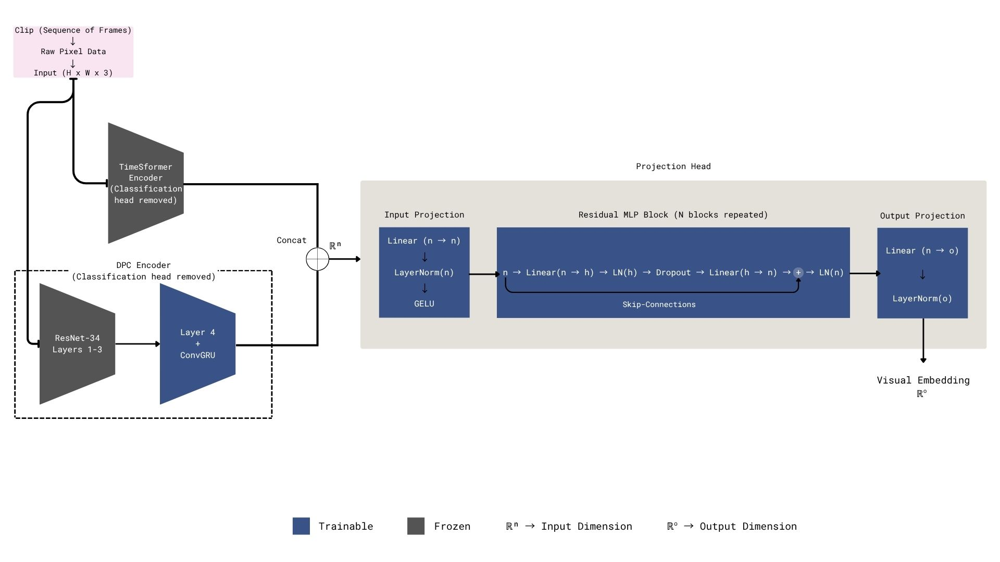

CSE 400 — Final Year Thesis
Context-Aware Zero-Shot Anomaly Detection in Surveillance Using Contrastive & Predictive Spatiotemporal Modeling
Supervisors: Prof. Dr. Md. Ashraful Alam · Md Tanzim Reza
Developed a novel zero-shot anomaly detection framework identifying abnormal surveillance events without any anomaly examples during training. Combines spatiotemporal transformers with vision-language understanding to detect unseen threats in real-time.
Key Innovation: Dual-stream architecture integrating TimeSformer, DPC-RNN, and CLIP with a context-gating mechanism — enabling true zero-shot detection adaptive to different surveillance environments.
Results: Achieved 84.5% ROC-AUC and 72.3% PR-AUC on UCF-Crime, outperforming AnomalyCLIP (82.4%) at 0.45s detection latency.
Stack: Python · PyTorch · HuggingFace · TimeSformer · CLIP · DPC-RNN · OpenCV